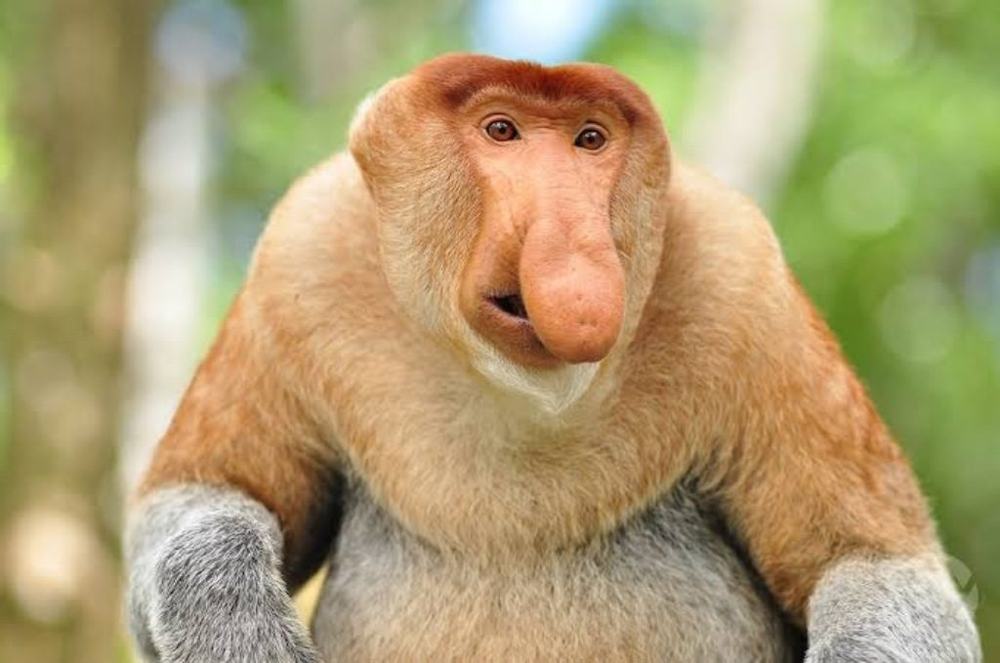
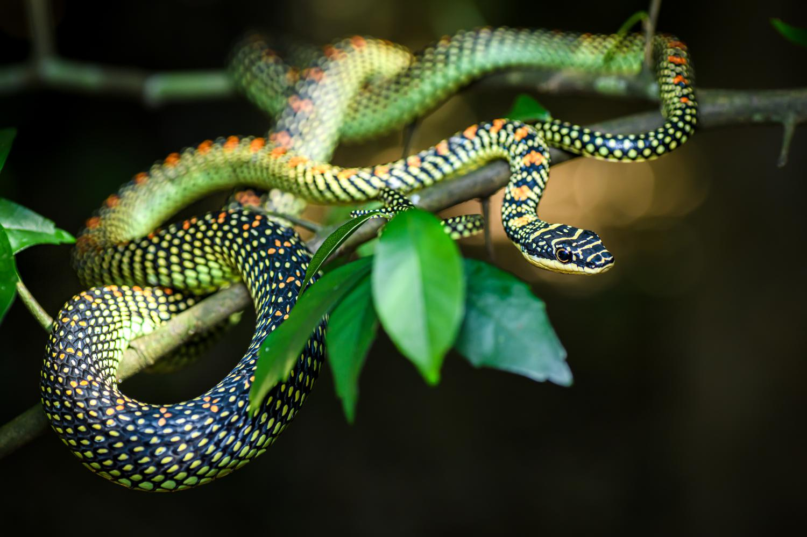

Kategori Burung

Bambangan Hitam

Belibis Kembang

Bondol Peking

Bondol Rawa

Cabai Jawa

Caladi Belacan

Cekakak Sungai

Cucak

Dederuk Jawa

Elang Bondol

Kareo Padi

Kipasan Belang

Kuntul Karang

Kuntul Kecil

Perkutut Jawa

Punai Bakau

Sikatan Kepala Abu

Walet Sapi
Kategori Mamalia

Bekantan

Bajing

Monyet Ekor Panjang

Tikus Hutan
Kategori Reptil

Biawak

Kadal Mangrove

Kadal Pohon Kalimantan

Ular Tambak

Ular Terbang Firdaus